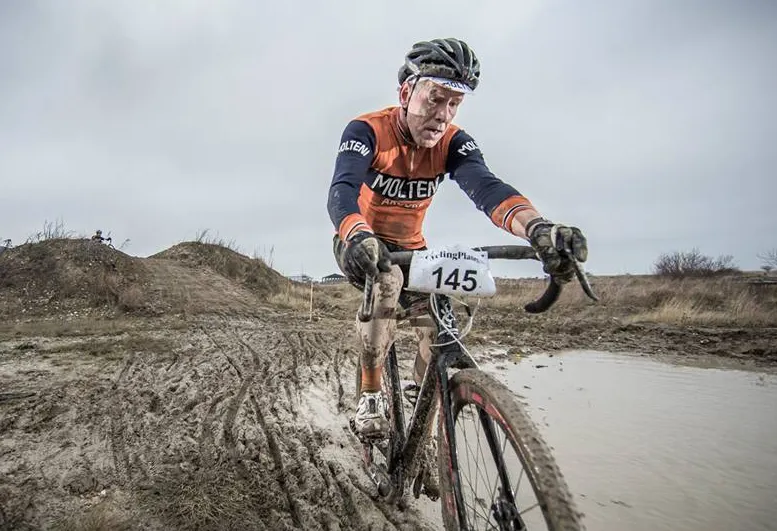

Så sæsonen slutter aldrig – og træning i badss-vejr tæller dobbelt!

Tema: Sæsonstart 2019 – Jens Langergaard
Vi har fanget Jens Langergaard efter et langt 3-timers træningspas i 4 grader og regn … Rule #9 //.
2019 bliver Jens’ 4. sæson i Moltenitrøjen.
Når mange cykelryttere sidder i sofaen eller stempler ind i Velopuds fra slutningen september til midt april, fortsætter Jens med cykelcross og banecykling.
Så sæsonen slutter aldrig. De der træninger og løb, som de andre ikke kører om vinteren, tæller jo dobbelt. Hvis du kører 50 km i badass-vejr i november, er du 100 km træning foran dem der sidder derhjemme og ser Barnaby, mens de pudser bagskifter med en vatpind. Og gør du det et par gange om ugen fra oktober til april, er du 4000 km træning foran dem ved deres sæsonstart, siger Jens Langergaard.


Jens står til start til Ronde van Borum første weekend i april og lørdagen efter er han at finde ved startstregen til hans fjerde Paris-Roubaix. Jens kører stærkt på pavéerne – og han har et helt særlig forhold til dem.
Jeg er vild med Paris-Roubaix. Jeg har et nærmest masochistisk forhold til de deforme pavéer. Jeg får tæsk op gennem cyklen og hele kroppen. Men når jeg er kommet op over 40 km/t på en pavé – så flyver jeg. Jeg svæver hen over brostenene. Jeg er i trance, fortæller Jens.
Jens håber også at komme til start i La Fleche Vejlleonne, som han ikke tidligere har kørt. Han håber også at han igen kan få kørt Jeppe Theimer på podiet til Arresø Rundt.
Til maj tager jeg på træningslejr i Ligurien og her vil jeg lave et rekordforsøg for stålcykler på Poggio-stigningen, som er en del af finalen på Milan-San Remo. Og så er der forhåbentlig et start nummer på vel til Eroica i Gaiole i oktober, afslører Jens.

Jens’ Colnago Super 1978 i original repaint. Hjul: Araya fælge på Record Nav. Gruppe: Record og Super Record.